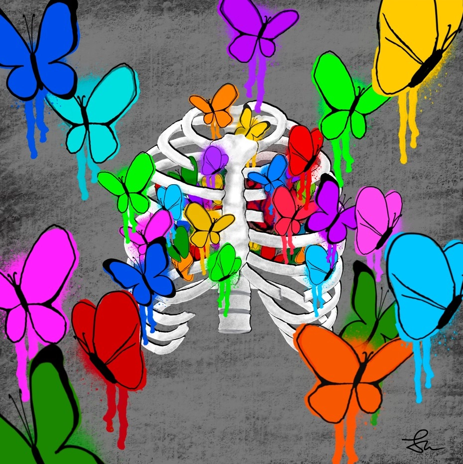

2022 | Digitaldruck auf Leinwand | 80 x 80 cm
Wieso denkt bei "Schmetterlinge im Bauch" eigentlich jeder an Tagfalter und nicht an Nachtfalter? Vielleicht, weil
man Tagfalter eher mit Leben, Leichtigkeit und Liebe in Verbindung bringt, Motten dagegen oft mit Tod und Vergänglichkeit verbindet.
Das Bild spielt mit genau diesem Kontrast zwischen Leben und Tod. Ist es nur die Sprühfarbe, die verläuft oder sind es doch blutende
Schmetterlinge? Wenn man genau hinsieht, erkennt man, dass sich im Gerippe noch immer ein Herz befindet und der Brustkorb gebrochene
Stellen aufweist. Durch einige dieser Brüche treten Schmetterlinge nach außen.
Inspiriert wurde dieses Bild von Street-Art und Spraykunst. Daher stammt auch der graue, betonähnliche Hintergrund,
der dem Motiv etwas Rohes und Urbanes verleiht. Die bunten Schmetterlinge heben sich dadurch zusätzlich vom Rest ab.